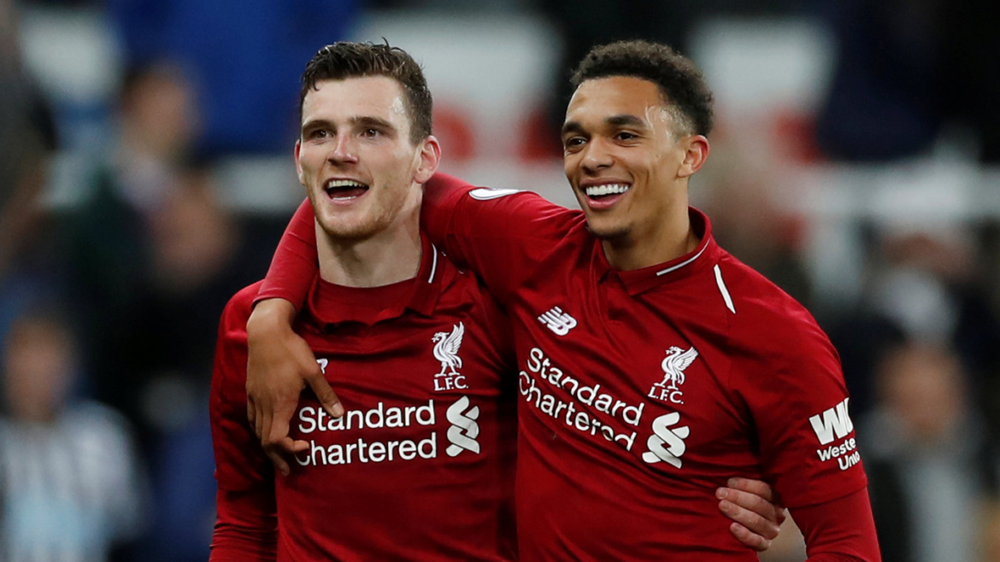
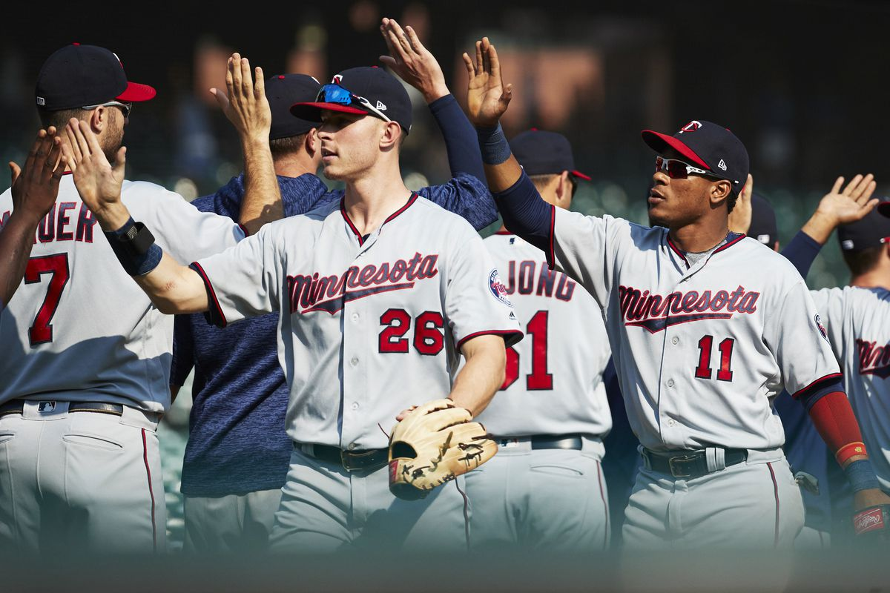
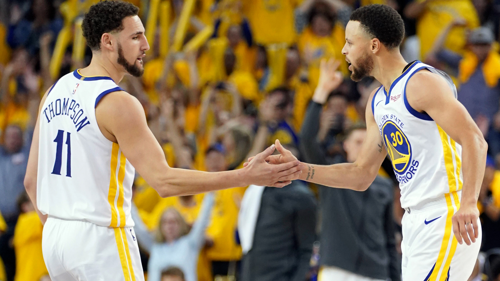

My Sports Teams
-
Liverpool
I support Liverpool FC. Liverpool won their sixth European Cup in 2019. On their path to the title of 'World's Best Club', they defeated Barcelona in one of the greatest comebacks in in the history of sports. The club has now won 76 of a possible 78 points in the 2019-20 Premier League Season and are primed to win their first league title this century. Lead by star wingers Mo Salah and Sadio Mane and high flying fullbacks Trent Alexander-Arnold and Andrew Robertson (pictured), their high-pressure system is frustrating even the most talented teams.
 -
Minnesota Twins
My favorite MLB team is the Minnesota Twins. The Twins won 101 games just two years removed from having the worst record in the league. New manager Rocco Baldelli is credited with much of their improvement. Minnesota lead the league in home runs and runs scored in 2019. They lost to the New York Yankees in the playoffs, getting swept after the league's most potent offense scored just 7 runs in 3 games.
 -
Golden State Warriors
The Warriors lost in the 2019 NBA Finals to the Toronto Raptors in 6 games, despite losing 2 of their best players to injury in the playoff run. After this loss, Kevin Durant decided not to remain with the team and signed a new contract with the Warriors then subsequently be traded to the Brooklyn Nets for Deangelo Russell. With Klay Thompson out for the season with a torn ACL, Steph would bear the brunt of the offensive load for the 2019-20 season. After Curry broke his hand in the first month of the season, the Warriors quickly became one of the worst teams in the league. The Warriors then dealt Russell at the trade deadline for Andrew Wiggins, who will be a better fit with star guards Curry and Thompson when they return from injury next season.
